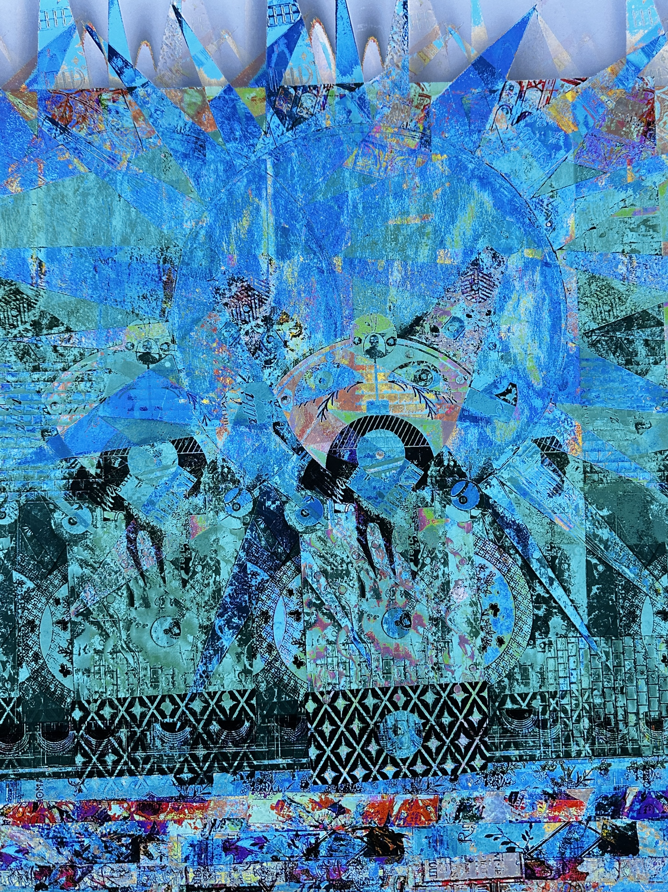
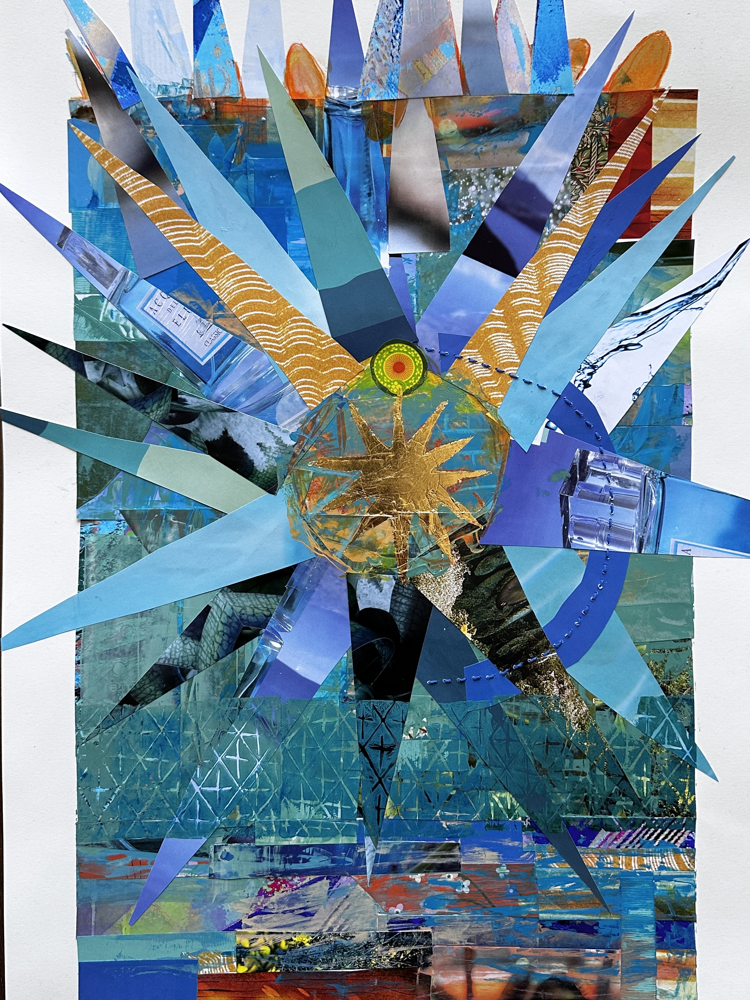

Final Project for ART 74. The intent was to glitch a photo of Para Todos, as seen on my portfolio homepage, then take inspiration of what the glitch revealed, and then to create a new work of art. Above you see the glitch and the Para Todos 2.0. Per Mark Tribe's definition of New Media Art, I wanted to use the 'glitch' to see artwork in a new way and then to discover when the glitched image reveals, nuances that aren't seen without the glitch. Then to take inspiration from these findings a create a new artwork. Along this process, I questioned, "What if I glitched this new work?"; I wondered what the new glitch would offer. Then I realized that I could do this continuously, and end up creating an infinite body of work, all based from one original image. The process of glitching and recreating, invites the artist and the viewer to reconsider what the physical artwork offered and what the endless opportunities could be.